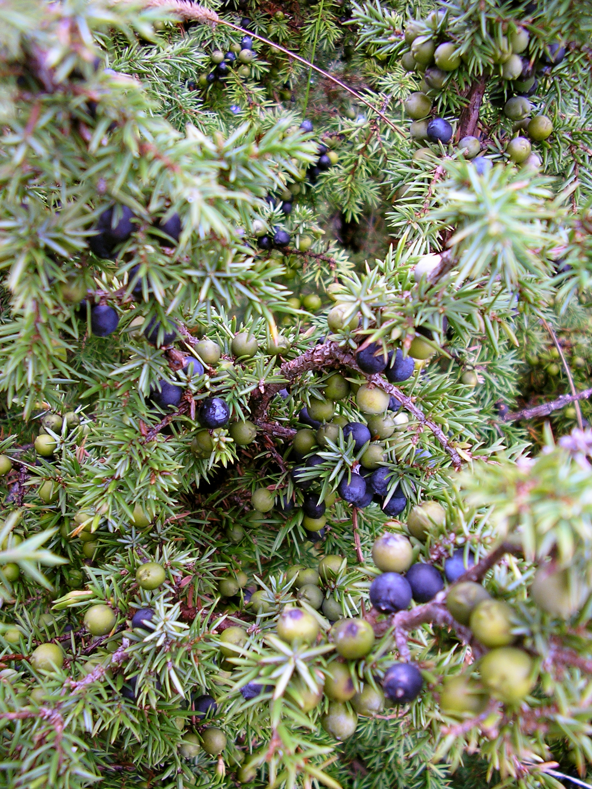

Juniperus communis
| common name | juniper | |
| en español | enebro común, jinebro | |
| name in Āyurveda | hapuṣā (हपुषा) | |
| plant family | Cupressaceae (cypress/cedar) | |
| parts used | dried cones |
 from Wikimedia Commons by Pt, CC BY-SA 3.0
{kind=link}
observations/description
dried berries
- small dark indigo berries, many spherical and some slightly shriveled
- pleasant, musty, racy, resinous pine scent
- can be pungent, citrusy, strong, bright, and highly evocative of gin
"Juniperus communis", Wikipedia
- highly variable in form, ranging from 10 meters to a low, often prostrate spreading shrub in exposed locations
- green needle-like leaves in whorls of three
- dioecious, with male and female cones on separate plants, so requiring wind pollination to transfer pollen from male to female cones
- a male tree or shrub can live more than 2000 years
- male cones are yellow and fall soon after shedding their pollen in March–April
- fruit are berry-like cones
- they are initially green, ripening in 18 months to purple-black with a blue waxy coating
- spherical, usually have three (occasionally six) fleshy fused scales, each scale with a single seed
distribution/conservation status
"Juniperus communis", Wikipedia
- this species has the largest geographical range of any woody plant, with a circumpolar distribution throughout the cool temperate Northern Hemisphere from the Arctic south in mountains to around 30°N latitude in North America, Europe and Asia
- relict populations can be found in the Atlas Mountains of Africa
- listed as 'Least Concern' on IUCN Red List of Threatened Species; listed as 'Secure' by NatureServe
primary actions
The Yoga of Herbs, p. 126-7
- diuretic, diaphoretic, digestive stimulant, carminative, analgesic, antiseptic, antibacterial, anti-inflammatory
The Modern Herbal Dispensatory, p. 254-5
- antifungal, antiseptic, aromatic, carminative, diuretic
The New Age Herbalist, p. 53, 56
- diuretic, antiseptic, carminative, anti-inflammatory, aromatic, disgestive stimulant
system affinities
excretory, digestive
energetics
The Yoga of Herbs, p. 126-7
- reduces kapha, vāta; increases pitta
- pungent/bitter/sweet taste - pungent post-digestive effect
- heating
The Modern Herbal Dispensatory, p. 254-5
- warming, drying
primary uses
The Yoga of Herbs, p. 126-7
- one of the best diuretics for vāta, as it expels excess vāta and imporves digestion
- indicated for dropsy, edema
- often used with demulcent diuretics like marshmallow or gokṣura to balance irritant properties
- externally as a paste for arthritic pain and swelling
- indicated for sciatica, lumbago, arthritis, rheumatism, swollen joints, diabetes, dysmenorrhea
- supports weak digestion and weak immune system
- purifying action, which extends to the aura and subtle body
- destroys both resistant bacteria and negative astral influences
The Modern Herbal Dispensatory, p. 254-5
- strongly stimulates kidney function
- commonly used for edema and other urinary problems
- stimulates digestion
The New Age Herbalist, p. 53, 56
- potent diuretic
- may cause urine to smell of violets
- oil is antiseptic, useful in treating cystisis and urethritis
- warming tonic for debilitated digestion and helps relieve flatulence
- can chew berries to sweeten the breath and heal infected gums
- externally for neuralgia, sciatica, and rheumatic pain
- steam inhalation for colds, coughs, and excessive phlegm
witchcraft
The Witch's Encyclopedia of Magical Plants, p. 174-5
- protection/warding
- used during cremations in Germany to ward off demons
- hung on doorways in Tuscany to ward off witches
- used to seal cracks in walls in England to prevent evil from entering
- scent of juniper believed to ward off evil spirits in England
- cutting a juniper was believed to cause death within a year in Wales
- elements: earth, fire, water
- astrological influence: aries, leo, sagittarius, mars, mercury, moon, sun
extra information
The Modern Herbal Dispensatory, p. 254-5
- Juniperus monosperma is used in formulas to reduce blood sugar
- juniper berries must be cured for 1 year before use
pharmacology
The New Age Herbalist, p. 53, 56
- volatile oil (incl. pinene, myrcene, sabinene, limonene, terpenine, camphene, thujone), sugars, vitamin C, flavonoids, resin, gallotannins
contraindications/pharmaceutical interactions/warnings
The Yoga of Herbs, p. 126-7
- contraindicated for acute nephritis, cystitis, and pregnancy
The Modern Herbal Dispensatory, p. 254-5
- volatile oils can be irritating to the kidneys and nervous system with long-term use
- not recommended where the kidneys are inflamed or in cases of nephritis or nephrosis
- not recommended during pregnancy
The New Age Herbalist, p. 53, 56
- do not use during pregnancy or where there is kidney disease
- internal use of volatile oil is dangerous and only for professionals
Herbal Materia Medica, p. 23
- for short-term use only; may irritate the kidneys eventually
preparations
The Modern Herbal Dispensatory, p. 254-5
- standard infusion
- powdered berries, 30 g: 1 L
- tincture
- dried berries, 1:5, 65% alcohol, 10% glycerin
- glycerite
- dried berries, 1:8
- powder
Herbal Materia Medica, p. 23
- standard infusion
- dried leaves or berries, 1:32
- tincture
- (dried) berries, 1:5, 75% alcohol
The Yoga of Herbs, p. 79, 126-7
- hot infusion
- dried berries, 1:4 (strong)
- dried berries, 1:8 (moderate)
- powder
- paste
dosage
The Modern Herbal Dispensatory, p. 254-5
- standard infusion: 4-8 oz, 1-4/day
- tincture: 1-2 mL, 2-4/day
- glycerite: 10-20 mL, 3-4/day
- powder: 1000-2000 mg, 3/day
Herbal Materia Medica, p. 23
- standard infusion
- leaves: 2-4 oz
- berries: 2-3 oz, up to 3/day
- tincture: 20-40 drops, up to 3/day
The Yoga of Herbs, p. 92, 126-7
- hot infusion: 2 oz, 3/day
- powder: 250-500 mg, 3/day
personal experiences/simples
decoction (8 g: 12 oz, 25 minutes), dried berries
- aroma became more vibrant/fresher/sweeter as it cooked
- very clear, very pale golden color
- something of a film forming over part of the surface of the decoction
- very light taste, pungent and piney, gentle bitterness, light sweetness underneath
- delicious, if not strong enough of flavor
- perhaps should grind/lightly crush berries first
recipes
sources
Easely, Thomas and Steven Horne. The Modern Herbal Dispensatory (2016)
Frawley, David and Vasant Lad. The Yoga of Herbs: An Ayurvedic Guide to Herbal Medicine (1986)
Goldberg Blackthorn, Samantha. Ace of Cups Herbal Medicine and Botanical Magic Herbal School (2024)
"Juniperus communis" on Wikipedia. Retrieved 8 May 2025.
Kynes, Sandra. The Witch's Encyclopedia of Magical Plants (2024)
Mabey, Richard et al. The New Age Herbalist (1988)
Moore, Michael. Herbal Materia Medica, Fifth Edition (1995)